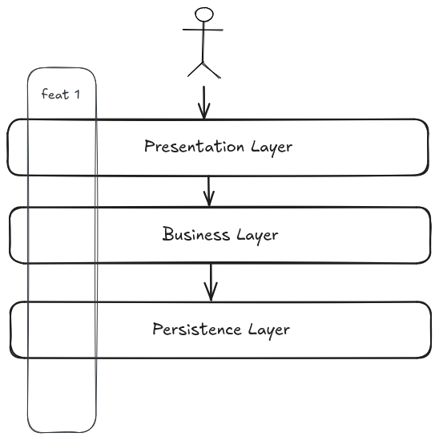
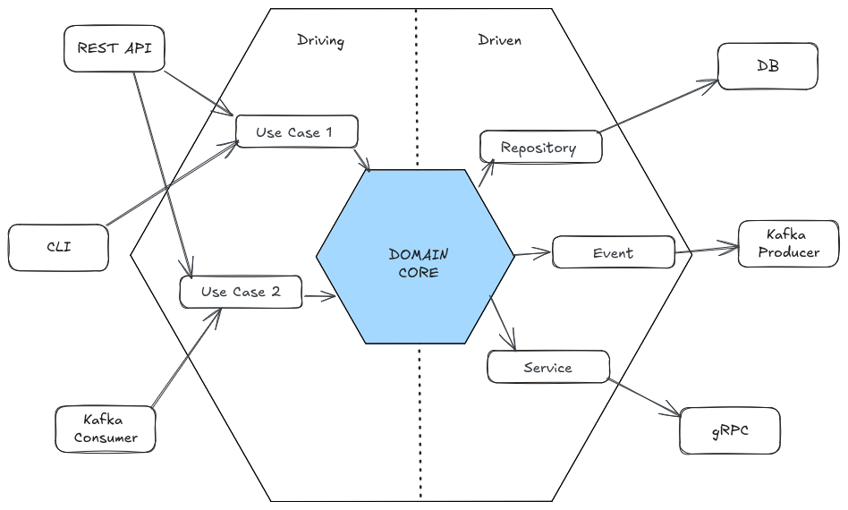

Architecture patterns
Vertical slice architecture
Vertical slices architecture isolate all logic of a feature by grouping functionality together based on workflow or business processes. That means, when adding or changing a feature in an application, it requires development into almost all layers in the application.

It is a way of organizing code that is more maintainable and scalable, with faster delivery times.
Domain-Driven Design
Domain-Driven Design (DDD) is a software development approach that focuses on generating a deep understanding of the business domain. It is a way of thinking and a set of priorities, aimed at accelerating software projects that have to deal with complex domains. Key concepts of DDD are:
- Ubiquitous language: A language structured around the domain model and used by all team members to connect all the activities of the team with the software.
- Bounded context: A boundary within which a particular domain model is defined and applicable. It is a way to keep the model clean and focused.
- Layers: DDD can be implemented in layers, where the domain model is at the center of the architecture.
- Presentation layer: The user interface, responsible to interact with the application or user.
- Application layer: orchestrates the domain objects to perform the required operations or use cases.
- Domain layer: The core of the application, where the business logic resides.
- Infrastructure layer: The external systems that the application interacts, like persistence, messaging, etc.

Hexagonal architecture
Also known as ports and adapters, is a way of organizing code that isolates the core business logic from the external world. The core business logic is at the center of the hexagon, and the external world is at the edges.
Two important concepts in hexagonal architecture are ports and adapters:
- Ports: Interfaces that define the way the application core interacts with the outside world. It can be an input/driving port or an output/driven port. Are agnostic to the implementation.
- Adapters: Implementations of the ports that connect the application core. They are primary/driving adapter when starts an action and secondary/driven adapter when represent connections to the backend, reacting to the primary adapter.

This gives the flexibility to make changes on the adapters (implementation) easily. For example you can swap out Oracle or SQL Server, for Mongo or something else. Or enable easily an additional entry point for a new consumer. Your business rules are not bound to the any of these changes outside the core.